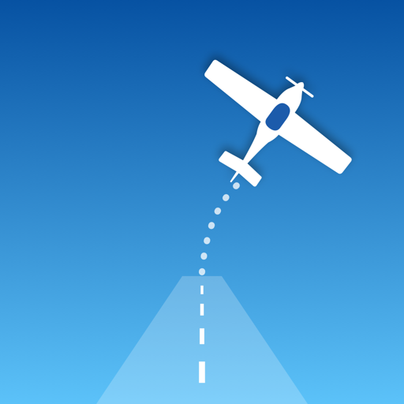

Chocks Off
Fly first. Log automatically.
Une petite app iOS qui enregistre vos vols VFR à partir du GPS de l'iPhone, pendant que SkyDemon (ou toute autre app de navigation) reste au premier plan. Après l'atterrissage, vous relisez, vous validez, et le vol est prêt pour votre carnet.
- Gratuit
- Open source
- Sans compte
- Données sur l'appareil
Comment ça marche
- DémarrerAu pied de l'avion, un seul bouton. Puis passez sur votre app de navigation.
- VolerEn arrière-plan, l'app détecte le décollage, les atterrissages et les aérodromes.
- ValiderRelisez les heures, complétez l'équipage, l'essence ou l'horodateur, et validez.
Ce que l'app enregistre
- Heures de décollage et d'atterrissage, temps de vol, nombre d'atterrissages (touch-and-go compris), distance parcourue.
- Aérodromes de départ et d'arrivée détectés hors ligne : Europe (code OACI) et plateformes ULM françaises.
- Carnet pilote et carnet de route de l'avion : horodateur, essence, huile, prochaine visite, remarques.
- Fonction à bord, nature du vol, passagers ; trace GPS du vol, affichée sur une carte.
- Exports : fichier d'import Carnet.aero, CSV complet, carnet de route par avion, traces GPX.
- Avis de vol à La Côte (LSGP), en option.
Chocks Off aide à tenir le carnet de vol, ce n'est pas une aide à la navigation. Les valeurs détectées peuvent être fausses : le pilote reste responsable de les vérifier.
Vos données restent chez vous
Pas de compte, pas de serveur, pas de publicité ni de suivi. Les vols et la position GPS restent sur votre iPhone ; un fichier ne sort que lorsque vous l'exportez. Politique de confidentialité.
Essayer la bêta
Chocks Off est en test sur TestFlight (iPhone avec iOS 26.2 ou plus récent). Pour rejoindre la bêta, écrivez-moi.
Open source
L'app est un projet personnel, sans but commercial. Le code sera publié en open source après les premiers vols de validation. Si elle vous fait gagner du temps, vous pourrez bientôt m'offrir un café.
A small iOS app that logs your VFR flights from the iPhone's GPS while SkyDemon (or any other navigation app) stays in the foreground. After landing, you review, you confirm, and the flight is ready for your logbook.
- Free
- Open source
- No account
- Data stays on device
How it works
- StartOne button, next to the aircraft. Then switch to your navigation app.
- FlyIn the background, the app detects takeoff, landings and aerodromes.
- ConfirmCheck the times, add crew, fuel or Hobbs, and confirm the flight.
What it logs
- Takeoff and landing times, flight time, number of landings (touch-and-go included), distance flown.
- Departure and arrival aerodromes detected offline: Europe (ICAO code) and French microlight fields.
- Pilot logbook and aircraft journey log: Hobbs, fuel, oil, next inspection, remarks.
- Crew function, flight type, passengers; GPS track of the flight, shown on a map.
- Exports: Carnet.aero import file, full CSV, journey log per aircraft, GPX tracks.
- Optional flight notice at La Côte aerodrome (LSGP).
Chocks Off helps you keep your logbook; it is not a navigation aid. Detected values can be wrong: the pilot remains responsible for checking them.
Your data stays with you
No account, no server, no ads, no tracking. Flights and GPS positions stay on your iPhone; a file only leaves it when you export it. Privacy policy.
Try the beta
Chocks Off is being tested on TestFlight (iPhone with iOS 26.2 or later). To join the beta, send me an e-mail.
Open source
The app is a personal, non-commercial project. The code will be published as open source after the first validation flights. If it saves you time, you will soon be able to buy me a coffee.